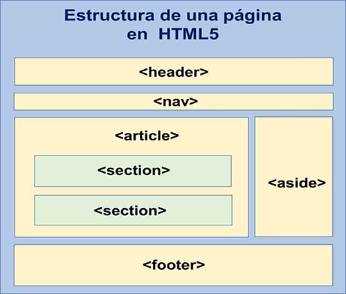

Familia Unadista,
¡adelante!
por Colombia luchad
con amor,
lleguemos con ciencia
a la gente,
transformémosla en
un mundo mejor.
SECTION
La etiqueta "SECTION" y su correspondiente etiqueta de cierre "SECTION" se utilizan para encerrar el código correspondiente a una sección genérica dentro de un documento o aplicación. Normalmente, un bloque de texto al que perfectamente le podríamos colocar un título o encabezado. Además, todo el contenido que engloba ha de guardar cierta relación entre sí.
El elemento de HTML (section) representa una sección genérica de un documento. Sirve para determinar qué contenido corresponde a qué parte de un esquema. Piensa en el esquema como en el índice de contenido de un libro; un tema común y subsecciones relacionadas. Es, por lo tanto, una etiquéta semántica. Su funcionalidad principal es estructurar semánticamente un documento a la hora de ser representado por parte de un agente usuario. Por ejemplo, un agente de usuario que represente el documento en voz, podría exponer al usuario el índice de contenido por niveles para navegar rápidamente por las distintas partes.
|  |
tomado de https://desarrolladoresweb.org/html5/estructura-de-una-pagina-html5/
ASIDE
Lo usaremos por tanto para todos aquellos elementos secundarios, como podrian ser los bloques publicitarios, enlaces externos, citas, un calendario de eventos, etc, siempre claro que no encontremos otra etiqueta más acorde de entre las ya comentadas.
aside
h1 Publicidad h1
(( código de la publicidad ))
aside
El elemento HTML (aside) representa una sección de una página que consiste en contenido que está indirectamente relacionado con el contenido principal del documento. Estas secciones son a menudo representadas como barras laterales o como inserciones y contienen una explicación al margen como una definición de glosario, elementos relacionados indirectamente, como publicidad, la biografía del autor, o en aplicaciones web, la información de perfil o enlaces a blogs relacionados.

|
tomado de https://cybmeta.com/anatomia-de-un-blog-en-html5